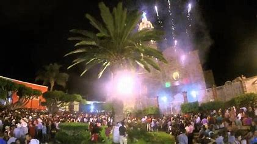
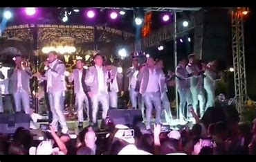
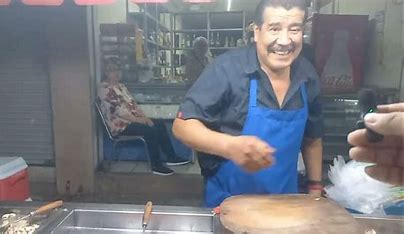
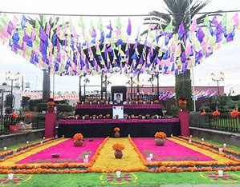
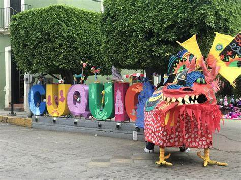
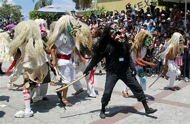

Tradiciones de Cuquío
Fiestas de Mayo: Tradición, Sabor y Diversión para Todos
Cada año, las Fiestas de Mayo transforman la plaza principal en un espectáculo lleno de colores, música y alegría. Esta celebración es famosa por sus grandes bailes, ambiente familiar y los múltiples puestos que llenan cada rincón del lugar.

Diversión para chicos y grandes
Los visitantes disfrutan de una gran variedad de actividades, como:
- Rueda de la fortuna
- Carritos chocones
- El martillo
Además, hay puestos de artesanías, juguetes, pinturas y artículos únicos que representan lo mejor de nuestra cultura.

El sabor de la tradición
La comida es uno de los mayores atractivos, con opciones para todos los gustos:
- Tacos
- Pizza
- Gorditas
- Churros
- Dulces típicos del lugar y de todo México

Cada bocado es una experiencia que conecta con nuestras raíces.
Espectáculos que hacen historia
Otro de los grandes atractivos son los espectáculos en vivo con artistas reconocidos a nivel nacional. En una edición memorable, se presentó el famoso Grupo Clasificado, dejando huella en los corazones de todos los asistentes.
¡No te las puedes perder! Las Fiestas de Mayo son el alma de nuestra comunidad, una experiencia única que une a familias, amigos y visitantes de todas partes.
Día de Muertos en Cuquío
El Día de Muertos se celebra con gran entusiasmo en Cuquío. Cada 1 y 2 de noviembre, las calles y la plaza principal se llenan de vida y color para honrar a quienes ya no están con nosotros.

Altares que cuentan historias
Los altares de muertos son decorados con fotografías, veladoras, papel picado, pan de muerto y ofrendas. Cada uno es una muestra de respeto, amor y creatividad.
Concursos y participación comunitaria
Uno de los eventos más esperados es el concurso de catrinas, donde participan instituciones educativas del municipio. Las calles se llenan de elegantes personajes que reflejan el arte y la tradición del Día de Muertos.

Sabores y aromas que despiertan recuerdos
Los puestos de comida ofrecen delicias como pan de muerto, chocolate caliente y otros platillos típicos especialmente preparados para estas fechas.
La flor que guía el camino
El cempasúchil, con su color naranja brillante, adorna los altares y calles. Se cree que su aroma y color guían a las almas de regreso al mundo de los vivos.
Vive la magia del Día de Muertos en Cuquío. Una tradición llena de simbolismo, unión y respeto por nuestras raíces.
Los Tastuanes
Los Tastuanes son personajes icónicos que se presentan en varios ranchos del municipio de Cuquío, como Juchitlán y Teponahuasco. En esta hermosa tradición, personas del pueblo se visten con trajes coloridos —algunos incluso terroríficos— y máscaras detalladas y muy vistosas.
La representación gira en torno a la figura del “rey”, quien va montado a caballo y simboliza la lucha contra los Tastuanes. Esta tradición se celebra durante las fiestas patronales y llena de ambiente los festejos.

Los Tastuanes juegan con el público, los asustan de manera divertida y entretienen al santo de la comunidad. Van acompañados de música y recorren los puestos, donde la gente les ofrece regalos que van desde juguetes hasta botellas de vino.
Una tradición llena de color, alegría y devoción, que mantiene viva la identidad cultural de Cuquío.